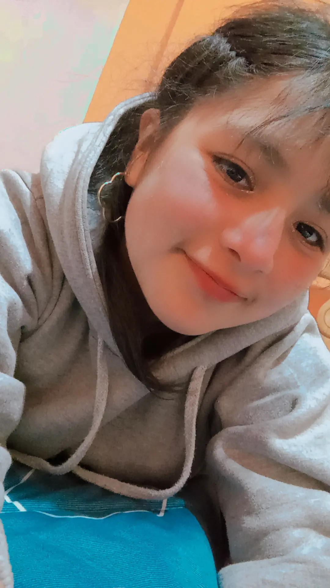
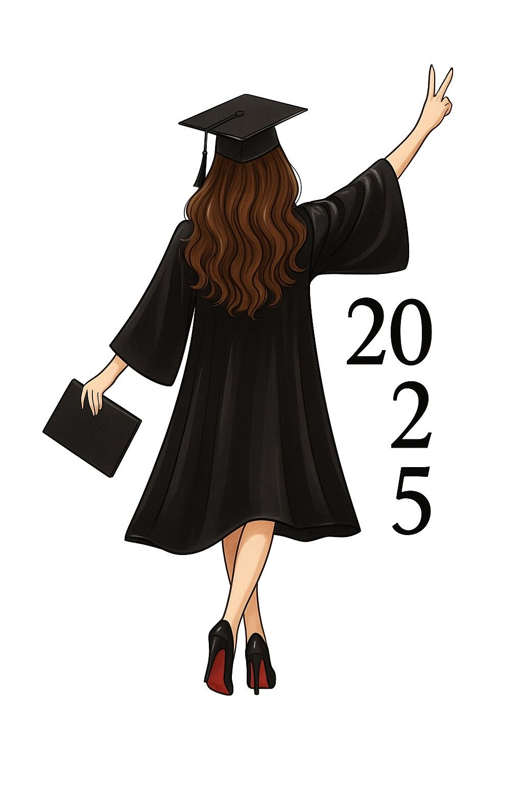
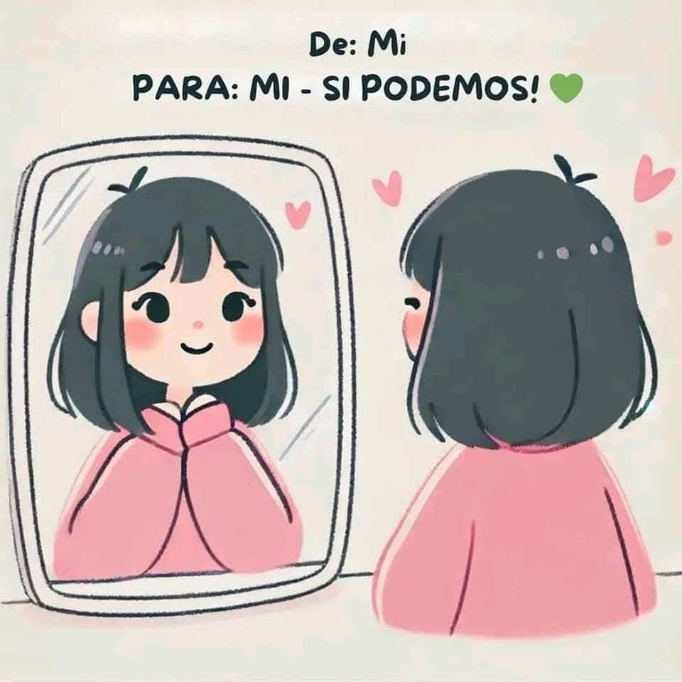
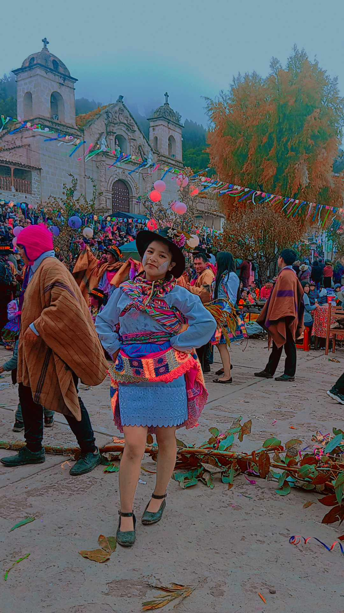
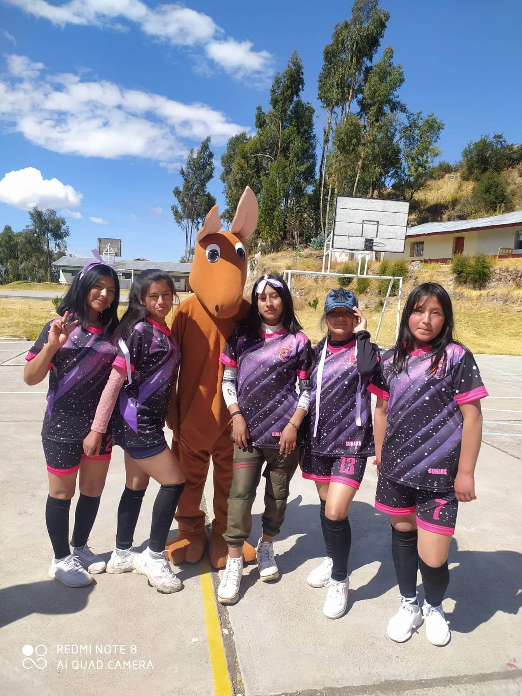

Objetivos
Seguir aprendiendo y mejorando mis habilidades. Convertirme en una profesional creativa y preparada. Crear proyectos que aporten valor e inspiren a otros. Crecer personal y espiritualmente con esfuerzo y fe.

Tengo 19 años y esta es mi página para compartir mis hobbies y mi historia. 💖
Soy Anaís Huamán Yancce, una persona soñadora y perseverante. Me gusta aprender, crecer y buscar siempre lo mejor para mi futuro. Disfruto de los atardeceres, el cielo y el campo bonito, porque me dan paz y motivación para seguir adelante con fe y actitud positiva.
Corto plazo: Terminar mis estudios y fortalecer mis conocimientos en tecnología. Mediano plazo: Emprender proyectos digitales propios y seguir capacitándome. Largo plazo: Ser una profesional exitosa, independiente e inspiración para los demás.
Seguir aprendiendo y mejorando mis habilidades. Convertirme en una profesional creativa y preparada. Crear proyectos que aporten valor e inspiren a otros. Crecer personal y espiritualmente con esfuerzo y fe.
Mi motivación es convertirme en una mejor versión de mí cada día. Me inspiran mis sueños, mi familia y la fe en que con esfuerzo y constancia todo es posible. Cada paso, por pequeño que sea, me acerca a la persona que quiero ser. Nunca dejo de aprender, crecer y luchar por mis metas, porque sé que el futuro se construye con dedicación y valentía.
Bailar es una de mis pasiones. Me hace sentir libre, feliz y me ayuda a expresar mis emociones a través del movimiento.
El vóley es mi deporte favorito. Me mantiene activa, mejora mi disciplina y me enseña a trabajar en equipo con esfuerzo y actitud positiva.
Amo escuchar música porque me acompaña en todo momento, me motiva, me relaja y me llena de buena energía.